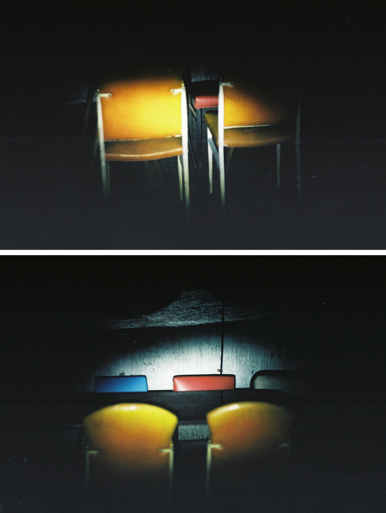
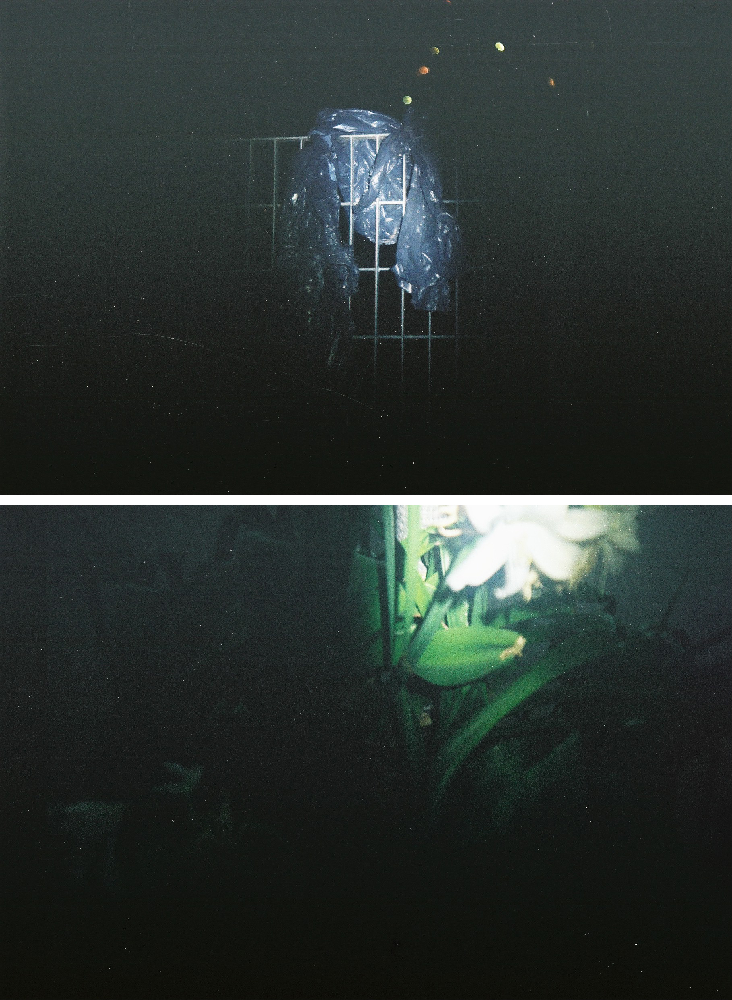
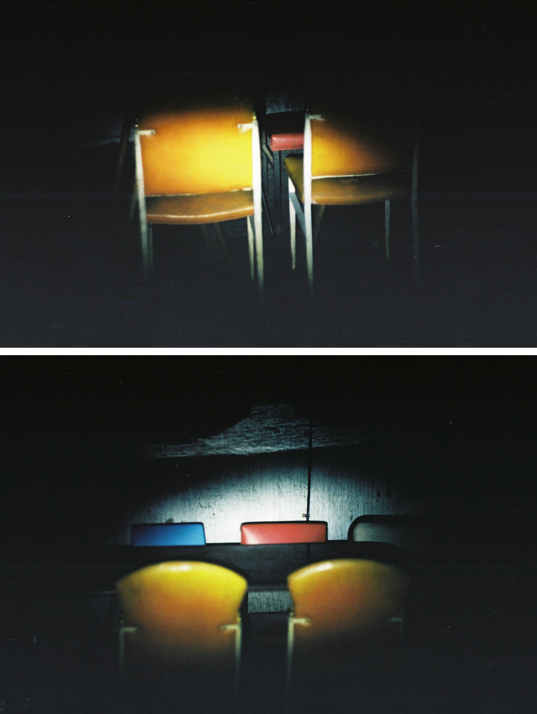
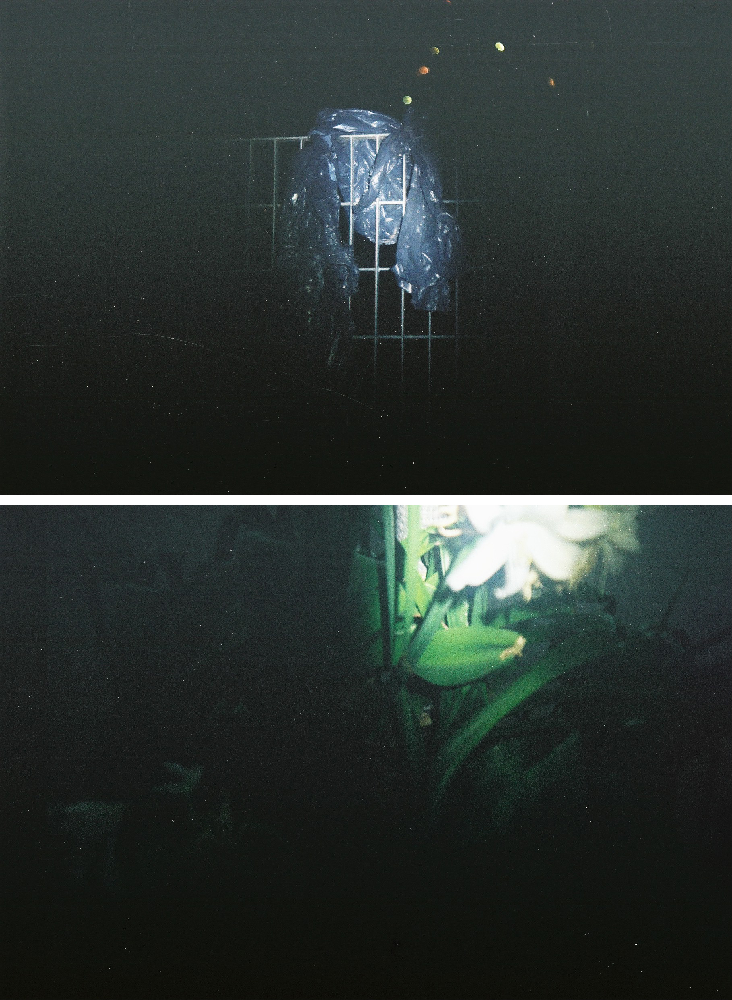

Las figuras que se escapan del día son atrapadas por una estela que recorre las calles,
la pequeña luminiscencia que advierte al resto de un viajante es la que crea y sostiene
el canal de comunicación, visual sobre el papel fotosensible, entre los seres del día y
los seres de la noche. Basta con aguantar la respiración y contar los pasos para enfocar,
obteniendo un solo elemento y descartando lo demás, sin segundos planos ni fuera de foco,
la absoluta negación como borde finito o infinito.
 



Cecilia Huberman es arquitecta.
Se interesa en la representación de Arquitectura y las Artes Visuales.
Saca fotos de noche con la luz de su bicicleta.